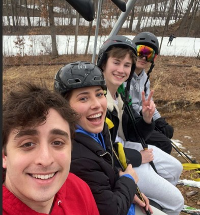

As a relatively new skier here in Wisconsin, I'm excited for the winter season to get started. I've been to Cascade Mountain and Alpine Valley before, but this year I'm hoping to get some serious practice in.
The Gear Situation
I recently picked up a great pair of used Solomon skis, so that's the first step sorted. Now, the hunt is on for a good pair of ski boots. It seems like finding boots that fit perfectly is the most important part, so I'm taking my time with this decision. If you have any recommendations, let me know!
The Plan: Wisconsin Hills
The big goal for this winter is to get ready for a trip to Park City, Utah, next March! To prepare, I'm planning to hit up all the key local spots as much as possible. My practice circuit will include:
- Cascade Mountain
- Alpine Valley
- Tyrol Basin
I'll be posting updates here as I get my gear finalized and start hitting the slopes.